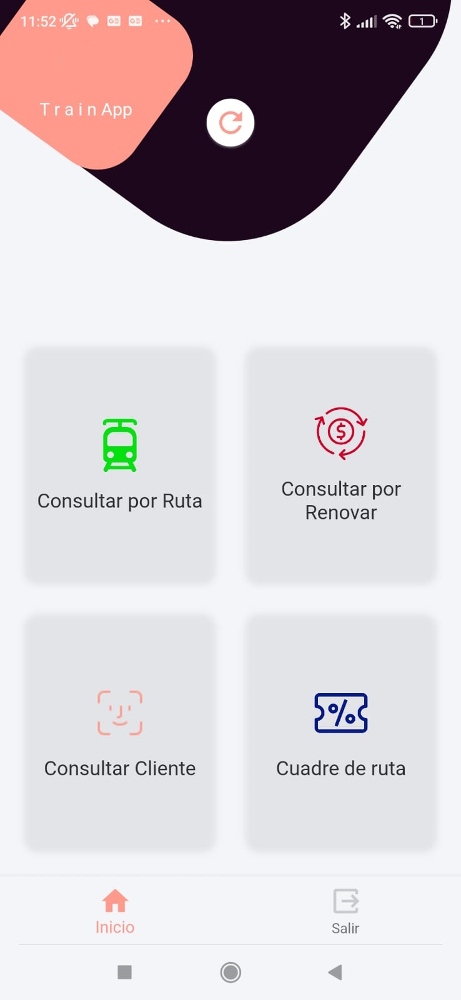
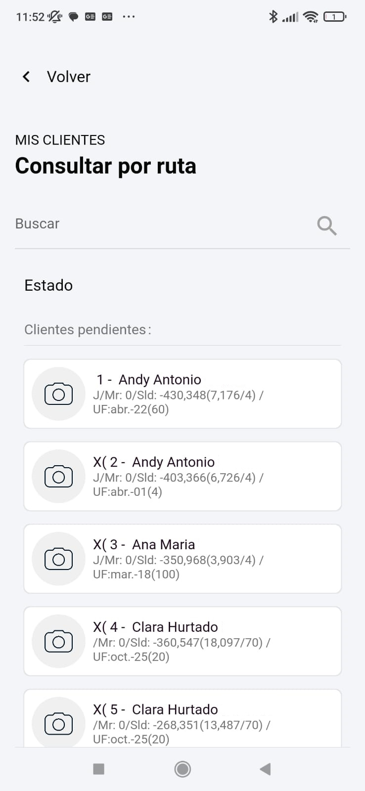
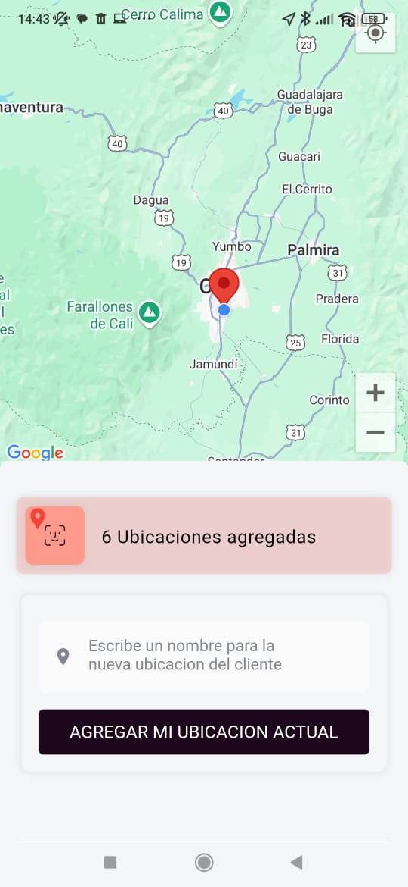
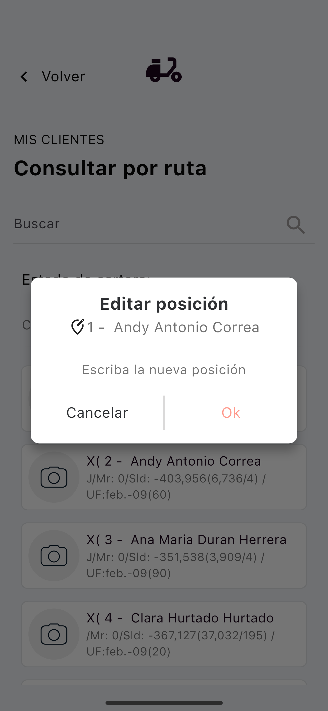
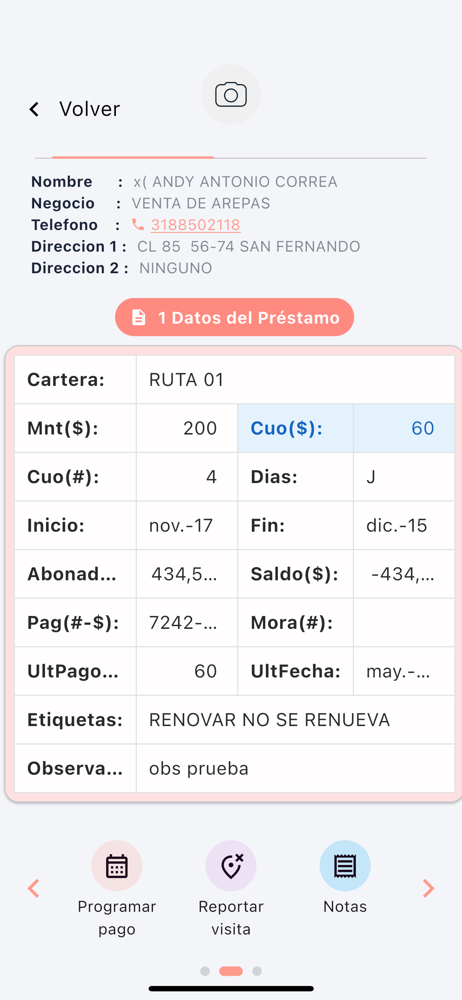
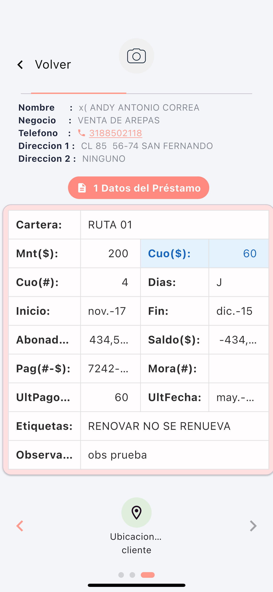

Plataforma SaaS para la gestión de rutas de cobranza y visitas de campo. Disponible para cualquier empresa financiera, cooperativa o institución de microfinanzas.
SIAGC es una plataforma multi-empresa. Cualquier organización del sector financiero o de microfinanzas puede contratar el servicio y distribuir la app a sus agentes de campo.
Solicitar informacióniOS (App Store): Próximamente disponible en la App Store de Apple.
Nota Android: Es posible que debas permitir la instalación desde "orígenes desconocidos" en tu dispositivo Android.
Ve a Ajustes > Seguridad (o Privacidad, según tu dispositivo).
Activa la opción "Instalar aplicaciones de fuentes desconocidas" o "Permitir desde esta fuente" para el navegador o gestor de archivos que utilizarás.




La ruta muestra los clientes en orden numerado de visita (1 = primero, último = último). El agente puede reordenar pulsando prolongadamente sobre cualquier cliente y escribiendo la nueva posición.

Desde el detalle de cada cliente, el agente puede reportar la visita realizada. La acción registra la fecha, hora y coordenadas GPS al momento de la visita.

El botón "Ubicaciones cliente" permite al agente registrar y visualizar en el mapa las ubicaciones GPS del cliente, facilitando futuras visitas.
Última actualización: 13 de mayo de 2025
Esta Política de Privacidad describe cómo SIAGC MOBILE recopila y trata la información en relación con su función de gestión de rutas de cobranza.
La aplicación NO realiza préstamos, procesamiento de pagos ni manejo de dinero.
Recopilamos únicamente lo necesario para funcionalidades básicas:
No usamos datos para publicidad, marketing ni perfiles de usuario.
No compartimos datos con terceros. Toda la información se envía exclusivamente al servidor de la empresa que utiliza la aplicación.
Todos los permisos se necesitan para el funcionamiento básico de la aplicación.
Los titulares de los datos pueden:
SIAGC Mobile actúa como procesador de datos. Las solicitudes deben gestionarse con la empresa usuaria.
Notificaremos actualizaciones importantes mediante:
Para preguntas sobre esta política o para solicitar información del servicio, escribir a: siagc.mobile.000000@gmail.com